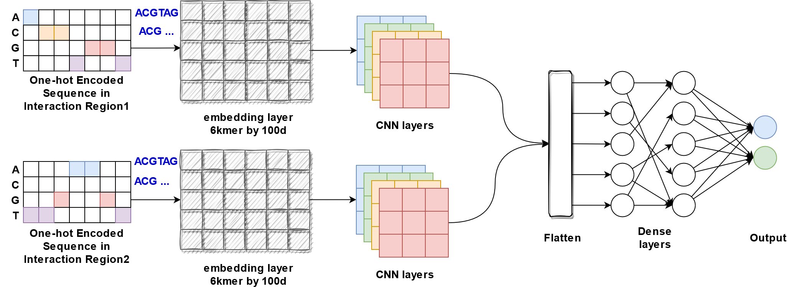
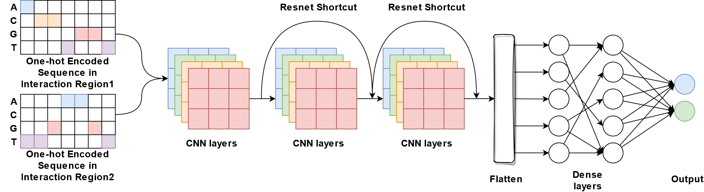

DeepChrInteract¶
Integrated Deep learning models¶
This release includes multiple models:
onehot_cnn_one_branchUse one-hot encoding to represent two merged chromatin interaction regions as input, followed by multiple convolutional layers and dense layers
onehot_cnn_two_branchUse one-hot encoding to represent two chromatin interaction regions separately as input for two branches of multiple convolutional layers, which will be merged and followed by multiple dense layers

onehot_embedding_denseUse one-hot encoding to represent two merged chromatin interaction regions, followed by a trainable embedding layer and multiple dense layers
onehot_embedding_cnn_one_branchUse one-hot encoding to represent two merged chromatin interaction regions, followed by a trainable embedding layer, multiple convolutional layers and dense layers

onehot_embedding_cnn_two_branchUse one-hot encoding to represent two chromatin interaction regions separately as input for two branches of multiple trainable embedding layers and convolutional layers, which will be merged and followed by dense layers
onehot_denseUse one-hot encoding to represent two merged chromatin interaction regions, followed by multiple dense layers

onehot_resnet18Use one-hot encoding to represent two merged chromatin interaction regions followed by multiple residual blocks structured in ResNet18
embedding_cnn_one_branchEmbed sequence merged from two regions using pretrained dna2vec embedding matrix as input, followed by multiple convolutional layers and dense layers
embedding_cnn_two_branchEmbed sequence from two regions using pretrained dna2vec embedding matrix respectively as input, followed by two branches of multiple convolutional layers, which will be merged and followed by dense layers

embedding_denseEmbed sequence merged from two regions using pretrained dna2vec embedding matrix as input, followed by multiple dense layers

Model options¶
python3 DeepChrInteract.py -h-h
This parameter is used to output
Help Page
************************************
************************************
Welcome to use DeepChrInteract
************************************
************************************
begin time >>> Thu Nov 11 00:09:03 2021
If it is the first time to use, please preprocess the data first.
Use the command: python3 DeepChrInteract.py -p true -n [gene name]
For example: python3 DeepChrInteract.py -p true -n AD2.po
usage: DeepChrInteract.py [-h] [-p PREPROCESSING] [-m MODEL] [-t TYPE] [-n NAME] [-o OBJECT] [-l LENGTH]
optional arguments:
-h, --help show this help message and exit
-p PREPROCESSING, --preprocessing PREPROCESSING
Preprocess the data, if you enter [true] (case sensitive), then proceed, if no, pass this process. Note: This command only needs to be entered once.
-m MODEL, --model MODEL
Enter the model name which your choose: [onehot_cnn_one_branch] / [onehot_cnn_two_branch] / [onehot_embedding_dense] / [onehot_embedding_cnn_one_branch] /
[onehot_embedding_cnn_two_branch] / [onehot_dense] / [onehot_resnet18] / [embedding_cnn_one_branch] / [embedding_cnn_two_branch] / [embedding_dense]
(all use lowercase).
-t TYPE, --type TYPE Please choose [train] / [test] (all use lowercase).
-n NAME, --name NAME Enter the gene name of your choice (note: case sensitive).
Here is the source gene name.
-o OBJECT, --object OBJECT
Enter the gene name of your choice (note: case sensitive).
Here is the object gene name.
-l LENGTH, --length LENGTH
Enter the length of gene, default is 10001.
Data preparation¶
python3 DeepChrInteract.py -p true -n AD2.po-p true
This parameter is to convert DNA sequence in text file to
pngimages for one-hot encoding input and pythonnpzfiles for word-embedding input-n AD2.po
This parameter is the text file folder containing four DNA sequence files, which include
seq.anchor1.pos.txt,``seq.anchor2.pos.txt``,seq.anchor1.neg.txt,``seq.anchor2.neg.txt``. Here isAD2.po
In this example, the command will generate all png images and npz files in a folder named AD2.po in the data folder
Note
This command only needs to be used once. If it is entered again, the previous data will be overwritten.
Model training¶
python3 DeepChrInteract.py -m onehot_cnn_one_branch -t train -n AD2.po-m onehot_cnn_one_branch
This parameter is to select the deep learning model. A total of 10 deep learning models can be chosen, namely:
onehot_cnn_one_branch/onehot_cnn_two_branch/onehot_embedding_dense/onehot_embedding_cnn_one_branch/onehot_embedding_cnn_two_branch/onehot_dense/onehot_resnet18/embedding_cnn_one_branch/embedding_cnn_two_branch/embedding_dense-t train
This parameter is used to select the type of use, either
trainortest.-n AD2.po
This parameter is to select the input file name, which is the same as
Data preparation
In this example, the command will train the onehot_cnn_one_branch model and the training results will be stored in h5_weight/AD2.po
Model testing¶
python3 DeepChrInteract.py -m onehot_cnn_one_branch -t test -n AD2.po -o CM.po-m onehot_cnn_one_branch
This parameter is to select the deep learning model. A total of 10 deep learning models can be chosen, namely:
onehot_cnn_one_branch/onehot_cnn_two_branch/onehot_embedding_dense/onehot_embedding_cnn_one_branch/onehot_embedding_cnn_two_branch/onehot_dense/onehot_resnet18/embedding_cnn_one_branch/embedding_cnn_two_branch/embedding_dense-t test
This parameter is used to select the type of use, whether it is
trainortest.-n AD2.po
This parameter is used to select the input file name (the same name as the folder where the file data is stored) The model used in this test is trained by AD2.po
-o CM.po
This parameter is the name of the test target gene The final test result will be recorded in log.log (time stamp will also be recorded)
In this example, the command will use the trained onehot_cnn_one_branch model from AD2.po data and output the results to result folder with subfolder named AD2.po and onehot_cnn_one_branch.
The final test result(auc_roc and Pearson Correlation Coefficient) will be recorded in log.log (time stamp will also be recorded)